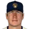
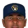
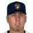
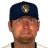
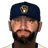
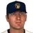

Major League Baseball · Depth chart & lineups
Milwaukee Brewers
← Team page · Payroll · Transactions
Based on games played and started through May 13, 2002. The OOTP export has no saved depth chart or lineup card, so this is derived from real usage. Lineups and depth chart list only players on the active roster now (26 players).
Most common lineups
For each batting-order spot, the active player who started there most often against that kind of starter (each player used once). Starts in spot = games he started in that spot out of the games against that hand. AVG/OBP/SLG: his season line with this club.
vs. right-handed starters 34 games
| # | Player | Pos | Starts in spot | AVG | OBP | SLG |
|---|---|---|---|---|---|---|
| 1 | CF | 33 of 34 | .261 | .331 | .422 | |
| 2 | 1B | 32 of 34 | .244 | .320 | .372 | |
| 3 | LF | 33 of 34 | .268 | .393 | .514 | |
| 4 | RF | 31 of 34 | .245 | .329 | .364 | |
| 5 | 2B | 28 of 34 | .250 | .344 | .457 | |
| 6 |  Tyler Houston | 3B | 24 of 34 | .312 | .345 | .457 |
| 7 | C | 18 of 34 | .333 | .376 | .634 | |
| 8 | DH | 18 of 34 | .227 | .260 | .383 | |
| 9 | Jason Bartlett | SS | 28 of 34 | .134 | .216 | .168 |
vs. left-handed starters 7 games
| # | Player | Pos | Starts in spot | AVG | OBP | SLG |
|---|---|---|---|---|---|---|
| 1 | CF | 3 of 7 | .261 | .331 | .422 | |
| 2 | 1B | 6 of 7 | .244 | .320 | .372 | |
| 3 | LF | 5 of 7 | .268 | .393 | .514 | |
| 4 | 2B | 3 of 7 | .250 | .344 | .457 | |
| 5 | Tyler Houston | 3B | 4 of 7 | .312 | .345 | .457 |
| 6 | C | 4 of 7 | .333 | .376 | .634 | |
| 7 | RF | 1 of 7 | .245 | .329 | .364 | |
| 8 | DH | 4 of 7 | .227 | .260 | .383 | |
| 9 | Jason Bartlett | SS | 4 of 7 | .134 | .216 | .168 |
Depth chart games started by position through May 13
| Pos | Role | Player | GS at pos | G | AVG | OBP | SLG | HR |
|---|---|---|---|---|---|---|---|---|
| C | Starter | 33 | 33 | .333 | .376 | .634 | 10 | |
| Backup 1 | Tyler Houston | 8 | 38 | .312 | .345 | .457 | 5 | |
| 1B | Starter | 32 | 39 | .244 | .320 | .372 | 4 | |
| Backup 1 | 7 | 40 | .245 | .329 | .364 | 2 | ||
| Backup 2 | 1 | 4 | .000 | .000 | .000 | 0 | ||
| Backup 3 | 1 | 40 | .227 | .260 | .383 | 5 | ||
| 2B | Starter | 38 | 39 | .250 | .344 | .457 | 7 | |
| Backup 1 | 3 | 39 | .244 | .320 | .372 | 4 | ||
| Backup 2 | Marco Scutaro | 0 | 19 | .182 | .220 | .236 | 0 | |
| 3B | Starter | Tyler Houston | 28 | 38 | .312 | .345 | .457 | 5 |
| Backup 1 | 13 | 40 | .227 | .260 | .383 | 5 | ||
| SS | Starter | Jason Bartlett | 38 | 38 | .134 | .216 | .168 | 0 |
| Backup 1 | 3 | 39 | .244 | .320 | .372 | 4 | ||
| Backup 2 | Marco Scutaro | 0 | 19 | .182 | .220 | .236 | 0 | |
| LF | Starter | 38 | 40 | .268 | .393 | .514 | 8 | |
| Backup 1 |  Curtis Pride | 3 | 18 | .167 | .242 | .233 | 0 | |
| CF | Starter | 37 | 38 | .261 | .331 | .422 | 5 | |
| Backup 1 | Todd Dunwoody | 3 | 13 | .205 | .250 | .295 | 1 | |
| Backup 2 | 1 | 4 | .000 | .000 | .000 | 0 | ||
| Backup 3 | Curtis Pride | 0 | 18 | .167 | .242 | .233 | 0 | |
| RF | Starter | 31 | 40 | .245 | .329 | .364 | 2 | |
| Backup 1 | Todd Dunwoody | 9 | 13 | .205 | .250 | .295 | 1 | |
| Backup 2 | Curtis Pride | 1 | 18 | .167 | .242 | .233 | 0 | |
| Backup 3 | 0 | 38 | .261 | .331 | .422 | 5 | ||
| DH | Starter | 26 | 40 | .227 | .260 | .383 | 5 | |
| Backup 1 | Marco Scutaro | 15 | 19 | .182 | .220 | .236 | 0 |
Rotation OOTP projected starters (projected_starting_pitchers.csv)
| # | Pitcher | Active | GS | W-L | IP | ERA | WHIP | K |
|---|---|---|---|---|---|---|---|---|
| 1 | Jay Spurgeon | Yes | 6 | 3-2 | 36.2 | 4.17 | 1.31 | 22 |
| 2 | Yes | 9 | 2-5 | 60.0 | 3.00 | 1.32 | 55 | |
| 3 | Victor Zambrano | Yes | 8 | 3-3 | 45.0 | 4.40 | 1.47 | 37 |
| 4 | Kurt Ainsworth | Yes | 9 | 2-4 | 47.1 | 6.85 | 1.73 | 35 |
| 5 |  Aaron Harang | Yes | 9 | 2-3 | 53.1 | 5.06 | 1.50 | 46 |
Bullpen roles from usage: closer = most saves, setup = most holds, long relief = most innings per outing (1.1+ IP)
| Role | Pitcher | Throws | G | SV | HLD | IP | IP/G | ERA | K |
|---|---|---|---|---|---|---|---|---|---|
| Closer | LHP | 21 | 6 | 1 | 22.2 | 1.1 | 3.18 | 15 | |
| Setup |  Alan Embree | LHP | 19 | 1 | 3 | 21.2 | 1.1 | 2.49 | 27 |
| Setup | Jesus Colome | RHP | 15 | 0 | 3 | 20.1 | 1.4 | 2.66 | 22 |
| Long relief | Matt Hensley | RHP | 7 | 1 | 0 | 15.0 | 2.1 | 3.60 | 9 |
| Middle relief |  Joe Beimel | LHP | 16 | 1 | 1 | 23.2 | 1.5 | 4.18 | 10 |
| Middle relief | Travis Phelps | RHP | 11 | 2 | 0 | 14.2 | 1.3 | 2.45 | 14 |
| Middle relief |  Mike James | RHP | 5 | 0 | 0 | 6.2 | 1.3 | 4.05 | 3 |
Bench active position players outside the regular lineups
| Player | Pos | G | PA | AVG | OBP | SLG |
|---|---|---|---|---|---|---|
| Marco Scutaro | 2B | 19 | 59 | .182 | .220 | .236 |
| Todd Dunwoody | CF | 13 | 48 | .205 | .250 | .295 |
| Curtis Pride | LF | 18 | 33 | .167 | .242 | .233 |
| 1B | 4 | 9 | .000 | .000 | .000 | |
| Kevin Cash | C | 4 | 4 | .000 | .250 | .000 |
Injured list
Nobody on the injured list.